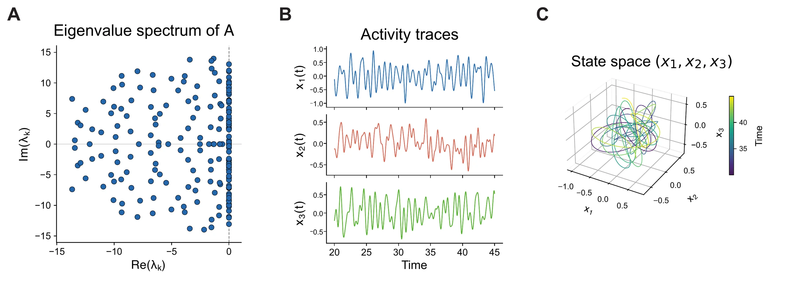
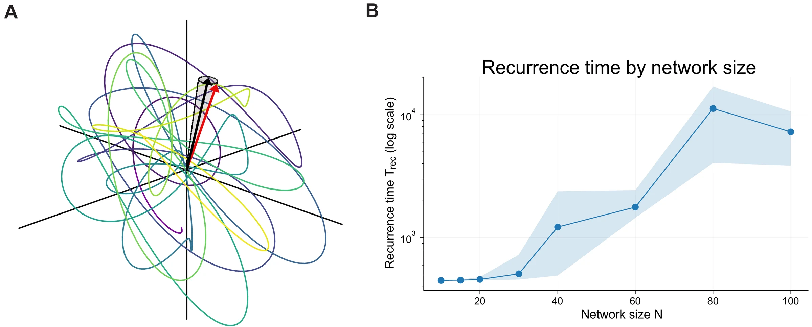
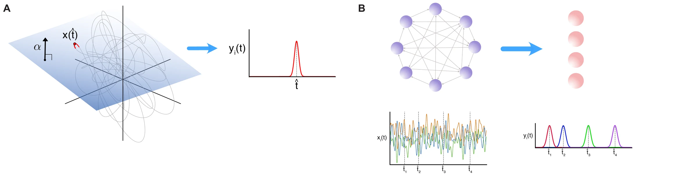
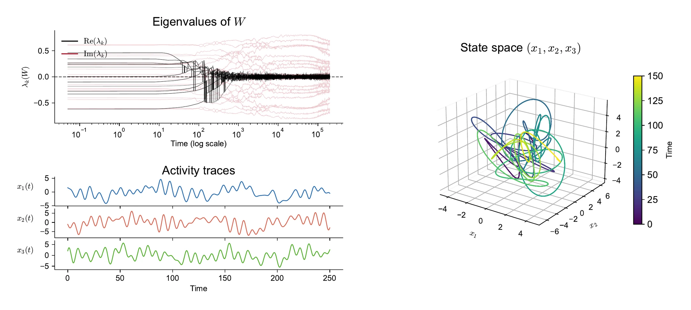

Sequence generation in dynamically critical networks
In a linear network dx/dt = Ax, I construct the connectivity so that many complex-conjugate eigenvalue pairs sit just left of the imaginary axis. Each pair contributes a slowly decaying oscillation. With incommensurate frequencies, their sum is quasiperiodic: it never exactly repeats.
To measure how long the activity takes to come back, I track the cosine similarity between the current state and the starting state. The recurrence time is the first moment it climbs back above a threshold. A downstream neuron with a rectified linear response can then fire at one particular moment, when the state lines up with its weights.
The same picture in my simulations, with connectivity built so that its spectrum hugs the imaginary axis:

In preliminary simulations, recurrence time grows rapidly with network size, because larger networks hold more near-critical modes.

I’m now testing how well banks of rectified linear readouts can decode these trajectories into sequences of timed pulses.

Networks that tune themselves
Criticality doesn’t have to be built by hand. Magnasco et al. (2009) showed that a local learning rule can drive a network’s eigenvalues to the stability boundary on its own. I reimplemented that model as a starting point for asking which computations this regime supports.

Lyapunov spectra across the transition to chaos
Add a nonlinearity and turn up the gain, and a network eventually loses stability. In the classical random network only a few eigenvalues reach the boundary first. With dynamically critical connectivity, many modes should lose stability almost together, and I want to know what that transition produces.
Lyapunov exponents are the right measurement. They give the average exponential rate at which nearby trajectories converge or separate, one for each direction in state space. I compute the full spectrum by evolving a set of perturbation vectors with the network’s Jacobian and reorthonormalizing them with a QR decomposition, following Engelken et al. (2020). From the spectrum come the Kaplan–Yorke dimension of the attractor and its entropy rate.
The next step is the comparison this demo can’t show yet: the same computation with dynamically critical connectivity, asking whether more exponents sit near zero at the transition than in the classical network.
Learning dynamics from recordings
I’ve also applied dynamic mode decomposition, a data-driven method for learning linear dynamics from time series, to Neuropixels recordings from the Hanks Lab.